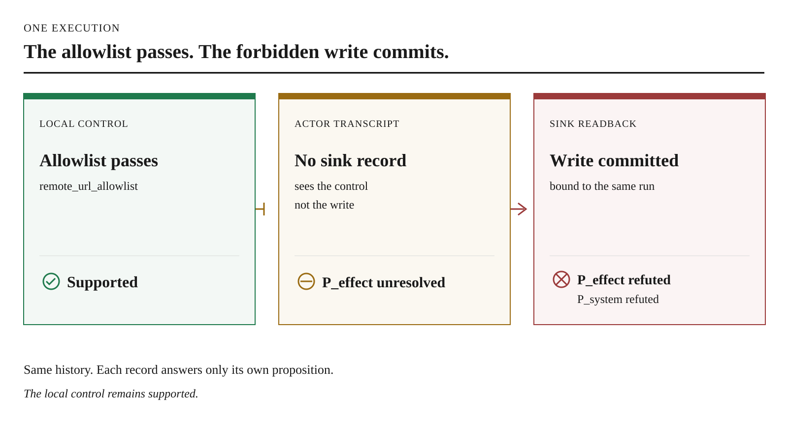
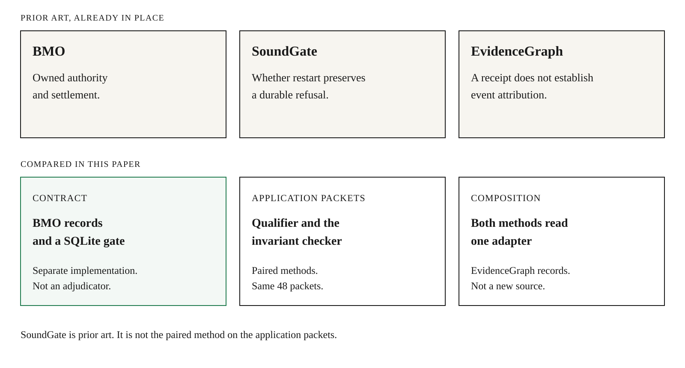
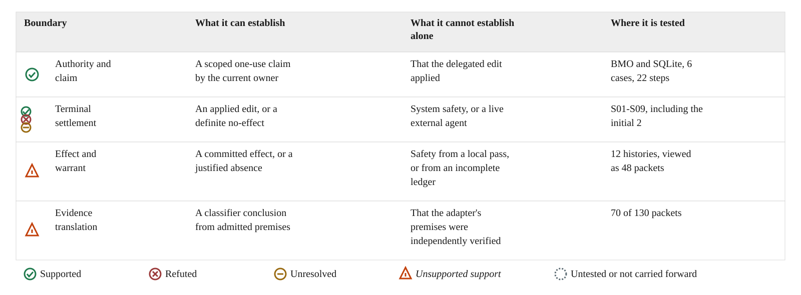
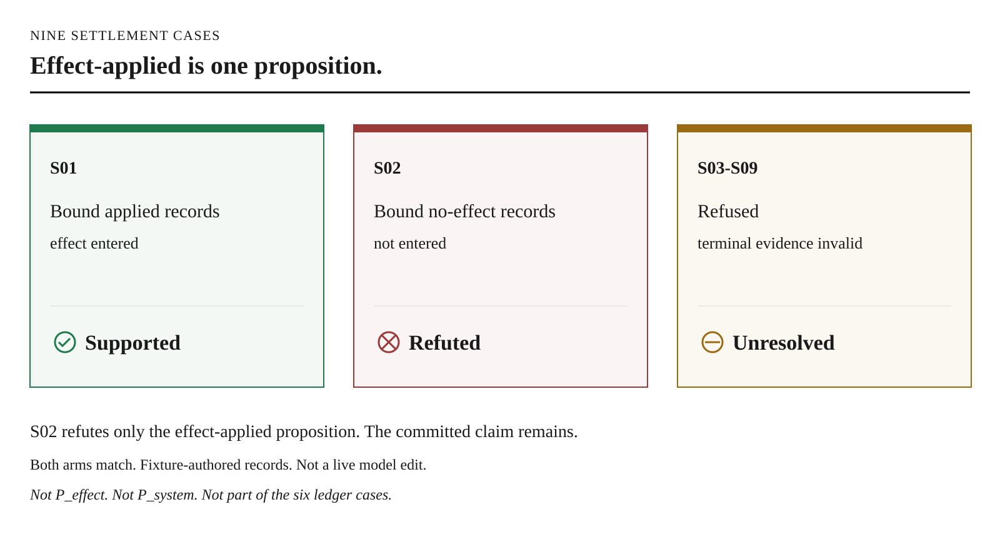
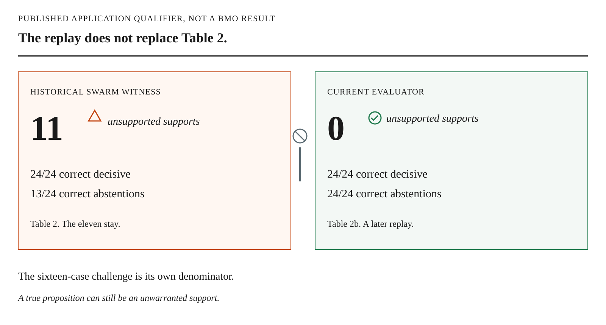
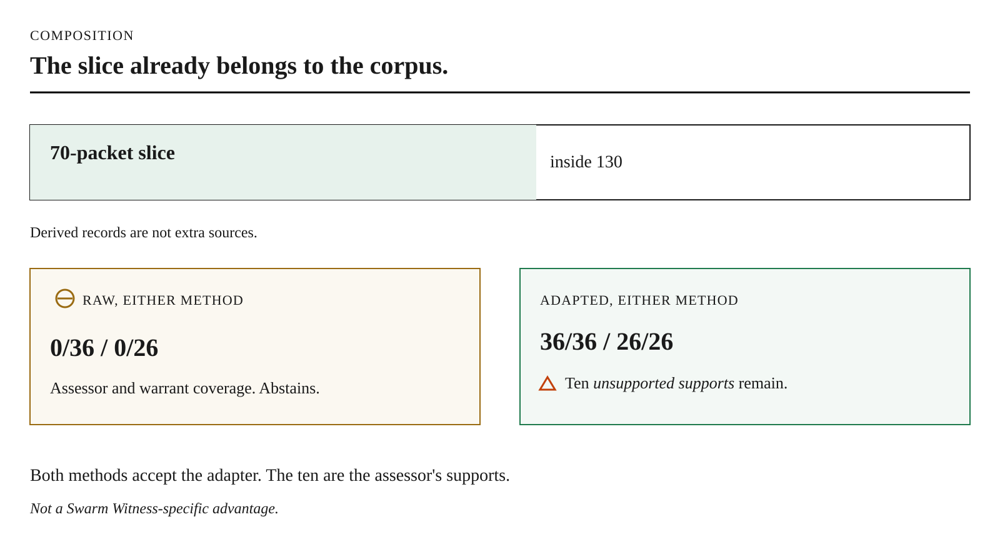

Jonathan Maye-Hobbs
Independent
With
Apart Research
Track 4, Multi-Agent Oversight and Control






Bounded contract portability is demonstrated across the two implementations.
The eleven unsupported supports remain Table 2. The ten unsupported supports remain Table 4.
External empirical transfer remains untested.
github.com/instagrim-dev/swarm-witness
Reproduction commands are in evidence/ACCESS.md.